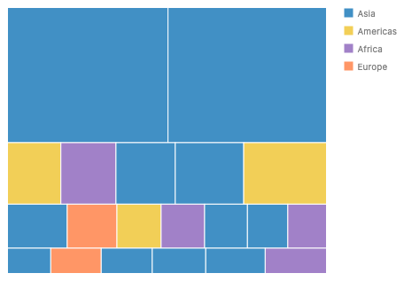
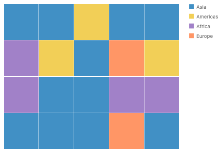
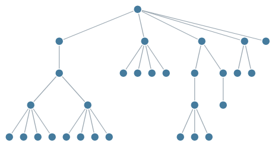
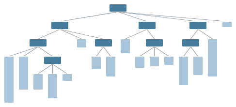
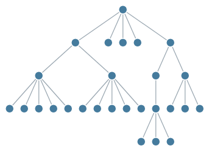
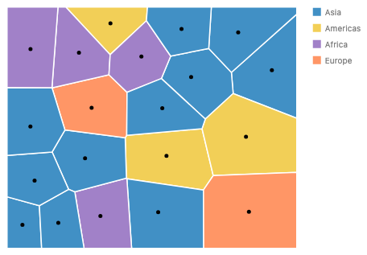

-
A dozen layout algorithms were written in user space and rendered.
Squarify and binary land on the built-in treemap's cells exactly. The
beeswarm lands on
Overlap.separatedot for dot. The tidy tree equalsd3.treenode for node. - Each one splits into a plan (the discrete decisions, as plain data) and a drawing (the plan written out in operators GoFish already has). No algorithm needed a new operator to draw its result.
-
Proposed: two functions that return GoFish.
layout(({ w, h }) => node)reads the space a node was offered, andmeasure(child)reads a child's geometry. They are the two steps of the layout protocol that user code cannot reach today. SwiftUI and Jetpack Compose expose the same steps, and GoFish's engine already works this way inside. -
The rectangular tilings become presets of one sequential tiling.
Spacing.contourgives tidy trees, layered or not. A sequentialchooseis the later, data form of the greedy rule. - Relations can replace positions for some layouts. One "at least this far apart" constraint reproduces the tidy tree and the graph layering exactly. It does not reproduce the beeswarm. The review tab has both experiments.
- The hard part is not any algorithm. It is letting a layout that measures shapes still take part in fitting a chart to its room. The review tab says why.
- This is the review deferred in the sankey round, of circle packing, treemap, dodging and layered layouts together. Nothing is implemented except the prototype stories.
The API: layout and measure
Two functions and a length sketch
{{code:p-api}}
The engine is symbolic, and the types have to show it. Before the
scale is chosen, every node tells its parent how much room it needs as
a function of the scale (in the code, an Extent whose
sides are Pwl.Value). The engine composes those, solves
for the scale once per scope, and only then hands pixels down. Its own
placement code is written once over an abstract arithmetic
(Arith: add, subtract, scale by a number, max) and runs
first in formulas and then in numbers. A user layout meets the same
two moments.
| Kind of layout | Example | What it reads | Its own size |
|---|---|---|---|
| Divides the room it is given | squarify, any tiling | layout: the space offered, in pixels |
None. It takes the room it is given, as
treemap does today and as SwiftUI's
GeometryReader does.
|
| Builds up from its children with add, subtract and max | a tidy tree by contours, anything stack-like | measure: the children's lengths |
Falls out of what it returns, as a length, so it takes part in fitting. |
| Builds up from its children with other arithmetic | circle packing, the greedy rule | measure, then .px |
Pixels only, unless it scales evenly. A packing of circles whose radii all grow with the scale grows with it too, so it can run once at scale 1 and report a length. Pixel parts (a gap, a pixel radius) break that, and #967 has the plan for them. |
-
measureanswers in lengths. Arithmetic that stays insideLength(add, subtract, scale by a number, max) keeps the result solvable, which is the same rule the engine's own code follows. -
.pxleaves the symbolic world. It works only for a length with no scale in it. A comparison, a product of two lengths, a square root or a division needs.px. -
layoutgives pixels, because space comes down after the scale is solved. Its body runs then, so alayoutnode cannot ask for room of its own. -
Neither places anything. The function returns operators
(
stack,layer,position), and those do the placing.positiontakes lengths as well as numbers. -
A function that calls
measureneeds its children's types resolved first, so it runs inside the engine and not when the spec is built. How it is registered (a lazy operator, #1334) is not designed here. -
Decisions are the catch. Kennedy's mean uses only add, subtract, max
and halving, so it stays symbolic. Walker's spread and the
by-position
fitcompare positions, so they need pixels wherever a position depends on the scale.
layout and
measure are Typst's spellings for exactly these two
things, and they work anywhere a node does. The alternative is a
second argument to createMark,
createMark((props, { box, measure }) => node), which
adds no top-level names but ties both to defining a mark. This page
uses layout and measure.
How the stages work
The stacks a layout body returns do take part in layout,
but in a second run of their own. The engine works in stages (resolve
what each axis means, collect size claims, solve the scale, lay out),
and the body can only run in the last one, because that is when the
space is known. So the nodes it returns arrive after the earlier
stages have finished for everything around them.
| When | What exists | What happens |
|---|---|---|
| The spec is built |
the layout node and the children it was given
|
Names, color scales, legends and axis meaning see the children, as for any node. |
| Size claims | the same |
The layout node asks for no room. Its children's
own claims are known.
|
| Scale solved, layout | the space offered, in pixels | The body runs and returns stacks over the children. |
| A second run, inside the box | the returned arrangement | The engine collects claims, solves and lays out the arrangement as its own scope, in the space offered. |
-
The marks exist up front. Data, names and colors live on the
children, so legends,
selectAlland animation keys see them at the usual time. Only the grouping is late.stack,layerandpositioncarry no data, so creating them late loses nothing. That is why the children are an argument. - A mark created inside the body is too late for legends, shared scales and names. That should be a loud error and not a silently missing legend entry.
-
Nothing shares a scale across the boundary. The inside is
solved against the box after the outside is settled. Children can
share a scale with each other. They cannot share one with a sibling
of the
layoutnode, and no axis runs through it. -
treemapalready works this way. Its children exist up front, and each is laid out in a room of its own (its tile) after the tiling is decided.layoutmakes the deciding step user code. -
A function that calls
measureruns earlier, while size claims are collected, so what it returns joins the same solve as everything around it. That is why it can take part in fitting and alayoutbody cannot.
Staging: what other systems do
A related-work search found close precedents for both functions. The split that organizes them comes from build systems (Mokhov, Mitchell and Peyton Jones, "Build Systems à la Carte", 2018): whether the structure of a computation is known before it runs. Applying it to layout is our reading, not something a paper states.
| Structure | In GoFish | What it can do | Precedent |
|---|---|---|---|
| Fixed, values flow through it | a function that calls measure |
Joins the one solve, takes part in fitting. |
Scala's Rep[T], where the type says when a value
is known. SwiftUI's Layout, which sizes and
places the subviews it is handed and cannot create views.
|
| A choice among alternatives that all exist up front | choose([a, b]) |
Every alternative is measured in lengths, one is picked, nothing is created late. |
SwiftUI's ViewThatFits. Selective functors
(Mokhov and others, 2019).
|
| Depends on a value known only late | layout(children, body) |
A nested second run inside its box. |
Compose's SubcomposeLayout, Flutter's
LayoutBuilder. Higher-order attribute grammars
(Vogt, Swierstra and Kuiper, 1989).
|
So layout is the escape hatch, and the first two rows
should cover what they can. A layout that only switches between
arrangements by the room it has is the middle row. Tilings stay in the
third: squarify compares aspect ratios, which is outside what a length
can do.
The middle row sketch
{{code:p-choose-responsive}}-
Containment. A
layoutnode's size is set from outside and cannot depend on what its body builds. CSS container queries require exactly this, and it is what made them possible. -
No size question through a builder.
Compose
rejects intrinsic measurement of a
SubcomposeLayout, and Flutter rejects it forLayoutBuilder, because answering would mean running the builder speculatively. This is why alayoutnode asks for no room. -
The body arranges, it does not create. SwiftUI's
Layoutand CSS Houdini'slayout(children, ...)hand the children in. This is why the children are an argument. - The body is pure, so it can be run again. Julia's generated functions have the same rule.
- A length must not leave its scope. A length computed inside a nested run refers to that run's scale, so it must not flow into the solve outside. Multi-stage languages call this scope extrusion. It is new to our list.
- Never loop back. Typst lays out again up to five times and warns "layout did not converge within 5 attempts". LaTeX asks for a rerun. GoFish solves once, and nothing here should change that.
Names worth borrowing:
ggplot2
names its stages in user code (after_stat,
after_scale, stage()), which is the
precedent for naming ours (resolve, measure, solve, place). Shading
languages call "when a value is known" its rate, which reads better
than "too late" in an error.
Not verified: several details in the search came from memory. One
claim needs checking before it is cited: that a
Length is exactly the "partially static data" of Yallop,
von Glehn and Kammar (ICFP 2018). The paper is real. Applying it to
piecewise-linear values is a reading.
Scheduling: what the attribute-grammar layout work says
Superconductor (Meyerovich, Torok, Atkinson and Bodik, 2013) and the papers around it treat layout as passes over a tree, where each pass runs top-down or bottom-up and computes a fixed set of values per node. The user writes what each value depends on, and a tool finds and checks the order of passes, which they call the schedule.
- A fixed number of ordered passes is well supported. Meyerovich's thesis finds that "sequences of 3-5 traversals often suffice for data visualizations and 9 for CSS". Superconductor's own treemap is five alternating passes over 94,000 nodes.
- Measure, solve, place has an exact precedent. The thesis stages memory allocation the same way: a bottom-up pass of requests, one global allocation, then a top-down pass of responses. Our solve step is the global step in the middle. It has no form in their schedule language.
- Never iterating is their rule too. They reject cyclic dependencies outright. Where CSS would need a fixed point, they copy what browsers do and pick a value.
Our stages in their schedule notation
{{code:p-schedule}}
parPost is a bottom-up pass, parPre a
top-down one, and ; runs one after the other (Meyerovich and others, 2013).
What we should not overclaim, or have not solved
- A pass that creates nodes is what everyone avoids. Spineless Traversal assumes "the tree structure itself does not change during layout". The traversal-fusion systems require a tree whose shape is read-only. Meyerovich moved CSS's generated boxes into a separate pass before layout. Higher-order attribute grammars do allow it, but the thesis associates them with scheduling at run time. So the nested run is not settled by citing them. What keeps ours simple is narrower: the returned tree uses the same node kinds and the same fixed schedule, so the schedule stays static and is only recursive.
-
Text that wraps belongs to
choose, not tolayout. Every way of breaking the text exists up front, so nothing is created late. What it needs depends on where the width comes from. A literal width (w: 260) needs nothing new. A width that comes from the room offered needs the height to be measured after the width is placed. CSS does this by always computing widths before heights, and GoFish's two axes are solved separately, so running the x passes to the end before the y measure pass is the same move. A choice that interacts with the scale on its own axis (how many columns fit) is a minimum over the alternatives' lengths, which isminin the size algebra (#630). Only a trade between the two axes needs a set of alternatives carried upward, which is the frontier in the choice proposal. Label avoidance is not this: it is the greedy rule. - Fixed passes grew in practice. Servo's first layout engine began with four traversals, grew to seven plus passes "added to address bugs", and its 2020 rewrite dropped the fixed-pass design.
- Fusing the nested run into the outer one does not apply. Fusion works on a tree that exists up front.
-
Incremental layout is not free. The incremental engines rely
on a stable tree and a fixed order of fields. A
layoutbody regenerates its tree, so it would need keyed reuse, and a solve is global, so any size change dirties its whole scope.
| Our rule | Their check |
|---|---|
| Marks exist before the body runs | The tree does not change during layout. |
No scale shared across a layout boundary |
Only interface attributes of a nested region are scheduled. |
A layout node reports no size |
A parent that reads it has an unsatisfied dependency. |
| A length does not leave its nested run | A type check. |
| Never loop back | Cyclic dependencies are rejected. |
Their checkers analyze declared reads and writes. JavaScript closures cannot be analyzed that way, so GoFish has to enforce the same rules through the shape of the API: in the measure pass, pixel values do not exist to be read. Their error is the model for ours: name the first pass that fails and the value it could not get.
What declared structure buys
These papers are mostly about speed, and every speedup comes from knowing something about the layout before running it. The split in this proposal (a plan of decisions, and a drawing in operators) is that kind of knowledge.
| What is known | What it allows | Precedent |
|---|---|---|
| A node's structure is fixed (it only measures) | Its passes can be fused, and its children can be processed in parallel or as arrays. | Superconductor fuses rendering into the layout passes and sizes buffers with a prefix sum. Six to seven times faster on eight cores. |
| The tree's shape did not change, only data | Re-evaluate the stored formulas. Do not re-plan and do not re-measure. | Spineless Traversal recomputes only fields that changed, in the original order: 1.8 times faster on average. d3's resquarify keeps the row plan and redoes the arithmetic. |
| Only the box changed (a resize) | Size requests are functions of the scale and do not mention the box, so only the solve and the place pass run again. | Follows from the symbolic engine. Not measured. |
A node is a layout box |
Its size is fixed from outside, so a change inside cannot spread out, and separate boxes are independent. | Flutter's relayout boundary. CSS containment. |
| A kernel scales evenly | Run it once at scale 1 and multiply. | d3's circle packing. |
| A cost adds up along a sequence |
choose can prune alternatives instead of trying
every combination.
|
Knuth and Plass. Bernardy's pretty printer. |
None of this is needed for the design to work, and none of it is measured on GoFish. It says which declarations are worth keeping: whether a node only measures, chooses, or builds late; what each pass reads; and stable keys for children.
Naming: in this literature a "visit" is one entry into one node, a "pass" is one sweep over the tree, and the "schedule" is the passes and their order. So our stages are passes. Not obtained, so not verified here: Kastens (1980), Vogt, Swierstra and Kuiper (1989), TreeFuser, Medea and the Cassius papers.
layout: a treemap that reads its box
sketch

Proposed
{{code:p-layout}}Today
The size is typed twice, once for the plan and once for the render:
drawSquarify(squarify(countries, [360, 300])) inside
layer({ w: 360, h: 300 }, ...).
measure: circle packing
sketch


Proposed
{{code:p-measure}}Today
The prototype can only pack circles whose radii are literal pixels, because user code cannot ask a child how big it is.
Where the result stays symbolic: a tree's contour fit
{{code:p-fit-lengths}}In Python sketch, not run
{{code:p-api-py}}
layout takes a function, so it goes through the callback
runner, as derive does. A function that calls
measure runs inside the engine, so in Python it is a
callback too. A plan that needs neither is a pure spec and needs no
callback.
The examples behind it
Squarify, as nested stacks today

The drawing: two stacks per row
{{code:sq-draw}}The plan: the squarify row rule, 24 lines
Missing: [360, 300] is typed twice. The plan needs the
box, and user code cannot read the box it will be given.
layout, at the top of this tab, is the fix.
Binary and strip, from the same machinery today


Binary: a tree of two-way splits (plan 27 lines)
{{code:bin-draw}}Strip: a list of rows (plan 24 lines)
{{code:strip-draw}}A strip treemap is line wrapping where a row's height follows from its total weight. Squarify is the same rule with the row direction chosen again for each row.
One tiling, many settings today






Baudel and Broeksema (2012) show the rectangular treemaps are one
algorithm with five small functions plugged in: the order of the
items, the size of each, a score that says when to close a row,
whether to subdivide a closed row again, and a phrase that says which
side of the remaining room the next row goes on. We wrote that
algorithm once (40 lines) and one drawing function (24 lines) that
turns any of its plans into nested stacks.
Each picture is one call
{{code:seq-use}}The algorithm: 40 lines
The drawing: any plan as nested stacks, 24 lines
Proposed: named tilings are presets sketch
{{code:p-presets}}
The names are the paper's and are placeholders.
Score is a Cost with the sign flipped and
should fold into the choice proposal's Cost family.
tile as one level. The paper's algorithm
takes a flat list of sizes and one rectangle. It never looks at the
levels above or below. For a hierarchy the paper runs it once per
node, inside the rectangle that node got, which is one
tile step per level in .flow(). Its
"recurse" setting is not the hierarchy: it subdivides a row of the
same level's items again, which is how pivot works.
squarify, slice and
dice could be settings of it and drop d3-hierarchy, and
strip, spiral and pivot come for free. The one difference is spacing:
d3 tiles the whole box and then shrinks each cell, and a stack with
gaps gives each child its share of the room that is left. Cell areas
differ by up to 11% between the two at spacing 2. This page leans to
the presets, with the stack meaning of spacing.
Beeswarm, by the greedy rule today


The whole rule: lowest-cost candidate that does not collide
{{code:greedy-helper}}A beeswarm: touch an earlier dot at my own x, stay near the axis
{{code:swarm-use}}Missing: the first line. The rule runs in pixels and user code cannot see the scale GoFish picks, so the story rebuilt it by hand from a rendered axis. A mark also cannot sit at a data value on x and a pixel offset on y without a workaround.
Circle packing, by the same rule today

Across two item orders and two costs, the greedy packing is within 4%
of the built-in's enclosing radius, tighter in two of four cases. It
is not d3's algorithm: the front chain tries one position per circle,
and this compares every touching position, at about n⁴ steps for n
circles. So pack stays a kernel, and the greedy rule is a
second packing a user can write.
The same decisions as data sketch
{{code:p-choose}}choose.
The helper is 31 lines of JS with three callbacks. It works today for
any shape, and it is opaque. The choose form reuses the
Placement candidates and the greedy chooser that label
placement already has, crosses to Python as data, and runs during
layout so it sees real pixels. It needs the choice proposal signed off
first. This page leans to building choose and treating
the helper as what it lowers into.
Tidy tree, by contours today


By boxes: 15 lines over public operators
{{code:tree-boxes}}
By contours, today: a separate 34-line fold in JS (Kennedy's
fit and merge) that mirrors the layout
recursion, and one Constraint.distribute per pair of
siblings to hand the offsets over. It is the only prototype where the
plan had to redo geometry the engine should own.
Proposed: one changed line sketch
{{code:p-tree}}
Spacing.contour is already planned (stack profiles, draft
PR #1375). This is the evidence that it is the whole difference
between a GoTree tree and a tidy tree, apart from centering the parent
between its first and last child.
Non-layered trees, and the symmetry rule today



A node's height is its file's length. The box version fell out of the
existing recursive function with no change except node sizes. For
contours, the outline becomes a list of pieces with a top, bottom,
left and right, instead of one pair per depth, and
fit changes in the one way the paper says.
merge keeps its meaning but needs the same two-list walk
(12 lines instead of 4). So "one change" is true of the algorithm and
not quite of the code. A layered tree is the case where every node in
a row has the same height.



The symmetry rule is a separate choice, and the pictures differ.
Spacing.contour uses Walker's spread, because it is what
d3 draws and it reads better. It matched d3 with 0 px difference on
this tree and on 398 random trees. Kennedy's mean is the alternative.
Layered graph, by phases today


The drawing: a spread of spreads, links between named nodes
{{code:graph-draw}}
The plan is three functions: layers (longest path, 12
lines), splitLongEdges (19) and order
(35 with its crossing count). This is the sankey proposal's approach
A. The straightened version is where today's API runs out: the story
copies spread's geometry to compute explicit y values, because there
is no "as close to the mean of these as the order allows" placement.
Voronoi, by relaxation today




The cells are drawn by the real partition with
Bin.voronoi({ seeds }). The loop is user code over
d3-delaunay. These are equal-weight cells. The answer to "is there a
Voronoi or Delaunay primitive" is on the next tab.